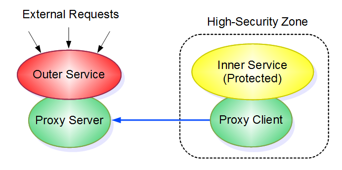

Package org.webpki.securityproxy
SecurityProxy - HTTP Security Proxy Framework
It is often desirable protecting sensitive resources from direct incoming calls while still being able to handle external requests. This usually leads to the use of some kind of reverse proxy solution. The following Java library provides a minute proxy solution that is designed for integration in Java applications. That is, this is not a tunnel scheme like SSH. The illustration below shows a typical configuration:
Core Features
HTTP-based. Builds on the "push-mail" concept where outgoing HTTP requests either terminate and return after a predefined but long time, or immediately return when request data is found
Speedy. Request latency is essentially a network "roundtrip"
Network-friendly. When there are no incoming requests, proxy network load is negliable
Secure. The proxy supports two-way TLS authentication using X.509 certificates
Self-healing. The proxy proxy channel is automatically restored in case of a network error or malfunction in any of the two end-points. The inner service is notified if the outer service is restarted
Bidirectional. Although the primary purpose of the proxy is catering for incoming requests, the same channel can also be used for "upload" of data that the outer service may need
Java-centric. The proxy accepts requests that are based on serializable Java objects
Load-configurable. The proxy enables you to define the maximum number of parallel HTTP "workers"
Multi-serviceble. There may be multiple and entirely different proxy services running in the same JVM instance or JBoss application
Testing the Proxy
In the subdirectory "securityproxy-test" you will find a file README that contains instructions on how to compile and run supplied proxy test code.
Secure Operation
In order to improve security a number of steps should be considered.
Filter incoming data. It is recommended verifying incoming data with respect to syntax so that malformed request data isn't forwared to the inner service.
Pre-authenticate requests. If incoming requests must be authenticated, it is recommended performing pre-authentication in the outer service before transferring request data to the inner service. The "upload" facility may be used for providing the outer service with information needed for pre-authentication.
Discriminate ports. The outer service and its proxy server channel are preferably bound to different HTTP ports. This requires specific settings in "server.xml" in Tomcat or Jboss.
Configuration
The security proxy requires a minimum of configuration data. The following sample sections cover both the client- and server-part of the proxy.
Inner Service Code Sample
The code snippet below shows how the proxy could be utilized in an "Inner Service" web application where one class holds servlet initialization code.
package com.example.innerservice; import java.io.IOException; import java.io.InputStream; import java.util.Properties; import java.util.logging.Level; import java.util.logging.Logger; import javax.servlet.ServletContextEvent; import javax.servlet.ServletContextListener; import org.webpki.securityproxy.ProxyClient; import org.webpki.securityproxy.ClientRequestHandler; import org.webpki.securityproxy.JavaRequestInterface; import org.webpki.securityproxy.JavaResponseInterface; import org.webpki.securityproxy.HTTPResponseWrapper; import com.example.common.SampleRequestObject; import com.example.common.SampleResponseObject; /** * Inner service using the security proxy system. */ public class InnerService implements ServletContextListener,A matching property file could look like this:ClientRequestHandler{ private static Logger logger = Logger.getLogger (InnerService.class.getCanonicalName ()); private static final String DEFAULT_PROPERTIES = "securityproxy.properties"; private static final String PROPERTY_PROXY_URL = "securityproxy.url"; private static final String PROPERTY_MAX_WORKERS = "securityproxy.max-workers"; private static final String PROPERTY_CYCLE_TIME = "securityproxy.cycle-time"; private static final String PROPERTY_REQUEST_TIMEOUT = "securityproxy.request-timeout"; private static final String PROPERTY_DEBUG = "securityproxy.debug"; private static final String PROPERTY_TRUSTSTORE = "securityproxy.truststore"; private static final String PROPERTY_STOREPASS = "securityproxy.storepass"; private static final String PROPERTY_KEYSTORE = "securityproxy.keystore"; private static final String PROPERTY_KEYPASS = "securityproxy.keypass"; staticProxyClientproxy_client = newProxyClient(); Properties properties; private String getPropertyStringUnconditional (String name) throws IOException { String value = properties.getProperty (name); if (value == null) { throw new IOException ("Property: " + name + " missing"); } return value; } private String getPropertyString (String name) throws IOException { return getPropertyStringUnconditional (name); } private int getPropertyInt (String name) throws IOException { return Integer.parseInt (getPropertyStringUnconditional (name)); } private boolean getPropertyBoolean (String name) throws IOException { String flag = getPropertyStringUnconditional (name); if (flag.equals ("true")) return true; if (flag.equals ("false")) return false; throw new IOException ("Boolean syntax error: " + name); } @Override publicHTTPResponseWrapperhandleHTTPResponseRequest(JavaRequestInterfacerequest_object) throws IOException { ... } @Override publicJavaResponseInterfacehandleJavaResponseRequest(JavaRequestInterfacerequest_object) throws IOException { SampleRequestObject sro = (SampleRequestObject) request_object; return new SampleResponseObject (sro.getX () * sro.getY()); } @Override public voidhandleInitialization() throws IOException { logger.info ("Got restart signal!"); ... } @Override public void contextDestroyed (ServletContextEvent event) { } @Override public void contextInitialized (ServletContextEvent event) { try { //////////////////////////////////////////////////////////////////////////////////////////// // Property fetching //////////////////////////////////////////////////////////////////////////////////////////// InputStream is = event.getServletContext ().getResourceAsStream ("/WEB-INF/" + DEFAULT_PROPERTIES); properties = new Properties (); properties.load (is); StringBuffer s = new StringBuffer (); for (String key : properties.stringPropertyNames ()) { if (s.length () > 0) { s.append (", "); } s.append (key).append ('=').append (properties.getProperty (key)); } logger.info ("Properties: " + s.toString ()); //////////////////////////////////////////////////////////////////////////////////////////// // Initialization //////////////////////////////////////////////////////////////////////////////////////////// if (properties.containsKey (PROPERTY_TRUSTSTORE)) { proxy_client.setTrustStore(getPropertyString (PROPERTY_TRUSTSTORE), getPropertyString (PROPERTY_STOREPASS)); } if (properties.containsKey (PROPERTY_KEYSTORE)) { proxy_client.setKeyStore(getPropertyString (PROPERTY_KEYSTORE), getPropertyString (PROPERTY_KEYPASS)); } proxy_client.initProxy(this, getPropertyString (PROPERTY_PROXY_URL), getPropertyInt (PROPERTY_MAX_WORKERS), getPropertyInt (PROPERTY_CYCLE_TIME), getPropertyInt (PROPERTY_REQUEST_TIMEOUT), getPropertyBoolean (PROPERTY_DEBUG)); logger.info ("Local Service Started"); } catch (Exception e) { logger.log (Level.SEVERE, "Couldn't initialize", e); } } }
##################################################################################### # Mandatory Properties ##################################################################################### securityproxy.url=https://extproxy.example.com:9090/proxychannel securityproxy.max-workers=10 securityproxy.cycle-time=300 securityproxy.request-timeout=60 securityproxy.debug=true ##################################################################################### # Optional Properties ##################################################################################### ##################################################################################### # If using HTTPS proxy server authentication you need a trust anchor # Supported: JKS and P12 ##################################################################################### securityproxy.truststore=truststore.jks securityproxy.storepass=changeit ##################################################################################### ##################################################################################### # If using HTTPS proxy client authentication you need a client certificate and key # Supported: JKS and P12 ##################################################################################### securityproxy.keystore=keystore.jks securityproxy.keypass=secretpwd #####################################################################################In order to make the proxy client channel start automatically when the inner service begins, a "web.xml" file is needed:
<?xml version="1.0" encoding="UTF-8"?>
<web-app version="2.5"
xmlns:xsi="http://www.w3.org/2001/XMLSchema-instance"
xmlns="http://java.sun.com/xml/ns/javaee"
xmlns:web="http://java.sun.com/xml/ns/javaee/web-app_2_5.xsd"
xsi:schemaLocation="http://java.sun.com/xml/ns/javaee http://java.sun.com/xml/ns/javaee/web-app_2_5.xsd">
<display-name>Inner Service</display-name>
<listener>
<listener-class>com.example.innerservice.InnerService</listener-class>
</listener>
.
.
.
</web-app>
Outer Service Code Sample
The following code snippets shows how the proxy could be utilized in an "Outer Service" web application.
package com.example.outerservice; import java.util.Vector; import java.util.logging.Logger; import javax.servlet.ServletContextEvent; import javax.servlet.ServletContextListener; import org.webpki.securityproxy.ProxyServer; import org.webpki.securityproxy.ServerUploadHandler; import org.webpki.securityproxy.JavaUploadInterface; import com.example.common.SampleUploadObject; /** * Proxy service initilization code */ public class Init implements ServletContextListener,In addition to the initialization code there must of course be an outer service that processes incoming requests as well:ServerUploadHandler{ private static Logger logger = Logger.getLogger (Init.class.getName ()); staticProxyServerproxy_server; private static final int HISTORY = 20; static Vector<SampleUploadObject> uploads = new Vector<SampleUploadObject> (); @Override public void contextInitialized (ServletContextEvent event) { proxy_server =ProxyServer.getInstance(event.getServletContext ().getInitParameter (ProxyServer.PROXY_SERVICE_PROPERTY)); proxy_server.addUploadEventHandler(this); } @Override public void contextDestroyed (ServletContextEvent event) { } @Override public voidhandleUploadedData(JavaUploadInterfaceupload_payload) { uploads.add (0, (SampleUploadObject) upload_payload); if (uploads.size () > HISTORY) { uploads.setSize (HISTORY); } logger.info ("Uploaded data reached service"); } }
package com.example.outerservice;
import java.io.IOException;
import java.util.logging.Logger;
import javax.servlet.ServletException;
import javax.servlet.http.HttpServletRequest;
import javax.servlet.http.HttpServletResponse;
import javax.servlet.http.HttpServlet;
import com.example.common.SampleRequestObject;
import com.example.common.SampleResponseObject;
/**
* This is an outer service that uses the java-2-java proxy request scheme.
*/
public class OuterService extends HttpServlet
{
private static final long serialVersionUID = 1L;
private static Logger logger = Logger.getLogger (OuterService.class.getName ());
@Override
public void doGet (HttpServletRequest request, HttpServletResponse response) throws IOException, ServletException
{
throw new IOException ("GET not implemented");
}
@Override
public void doPost (HttpServletRequest request, HttpServletResponse response) throws IOException, ServletException
{
SampleResponseObject sro = (SampleResponseObject) Init.proxy_server.processCall (new SampleRequestObject (new Double (request.getParameter ("X")),
new Double (request.getParameter ("Y"))));
response.setContentType ("text/plain");
response.setHeader ("Pragma", "No-Cache");
response.setDateHeader ("EXPIRES", 0);
response.getWriter ().print ("Result=" + sro.getResult ());
}
}
There must be a "web.xml" as well.
Note the name My.Proxy which holds the name of proxy channel.
The two java classes above should be packed together with "web.xml" into a "war" file.
<?xml version="1.0" encoding="UTF-8"?>
<web-app version="2.5"
xmlns:xsi="http://www.w3.org/2001/XMLSchema-instance"
xmlns="http://java.sun.com/xml/ns/javaee"
xmlns:web="http://java.sun.com/xml/ns/javaee/web-app_2_5.xsd"
xsi:schemaLocation="http://java.sun.com/xml/ns/javaee http://java.sun.com/xml/ns/javaee/web-app_2_5.xsd">
<display-name>Outer Service</display-name>
<context-param>
<description>Mandatory unique proxy service name</description>
<param-name>proxy-service-name</param-name>
<param-value>My.Proxy</param-value>
</context-param>
<listener>
<listener-class>com.example.outerservice.Init</listener-class>
</listener>
<servlet>
<servlet-name>OuterService</servlet-name>
<servlet-class>com.example.outerservice.OuterService</servlet-class>
</servlet>
<servlet-mapping>
<servlet-name>OuterService</servlet-name>
<url-pattern>/outerservice</url-pattern>
</servlet-mapping>
</web-app>
In addition, the "Outer Service" also needs to provision a proxy server
listener by packaging the following "web.xml" in another "war" file running in
the same servlet container.
The file "securityproxy.jar" must be placed in common servlet container "lib" storage.
JBoss applications may also put "securityproxy.jar" in an "ear" file.
<?xml version="1.0" encoding="UTF-8"?>
<web-app version="2.5"
xmlns:xsi="http://www.w3.org/2001/XMLSchema-instance"
xmlns="http://java.sun.com/xml/ns/javaee"
xmlns:web="http://java.sun.com/xml/ns/javaee/web-app_2_5.xsd"
xsi:schemaLocation="http://java.sun.com/xml/ns/javaee http://java.sun.com/xml/ns/javaee/web-app_2_5.xsd">
<display-name>Proxy Channel</display-name>
<servlet>
<servlet-name>ProxyChannelServlet</servlet-name>
<servlet-class>org.webpki.securityproxy.ProxyChannelServlet</servlet-class>
<init-param>
<description>Mandatory unique proxy service name</description>
<param-name>proxy-service-name</param-name>
<param-value>My.Proxy</param-value>
</init-param>
</servlet>
<servlet-mapping>
<servlet-name>ProxyChannelServlet</servlet-name>
<url-pattern>/proxychannel</url-pattern>
</servlet-mapping>
</web-app>
Common Objects
The following shows the sample objects used in this tutorial:package com.example.common; import org.webpki.securityproxy.JavaRequestInterface; public class SampleRequestObject implementsJavaRequestInterface{ private static final long serialVersionUID = 1L; private double x; private double y; public double getX () { return x; } public double getY () { return y; } public SampleRequestObject (double x, double y) { this.x = x; this.y = y; } } package com.example.common; import org.webpki.securityproxy.JavaResponseInterface; public class SampleResponseObject implementsJavaResponseInterface{ private static final long serialVersionUID = 1L; private double result; public double getResult () { return result; } public SampleResponseObject (double result) { this.result = result; } } package com.example.common; import org.webpki.securityproxy.JavaUploadInterface; public class SampleUploadObject implementsJavaUploadInterface{ private static final long serialVersionUID = 1L; private long last_time_stamp; public long getTimeStamp () { return last_time_stamp; } public SampleUploadObject (long last_time_stamp) { this.last_time_stamp = last_time_stamp; } }
Tomcat/JBoss Port Configuration
See supplied test code...-
Interface Summary Interface Description ClientRequestHandler Security proxy client request handler interface.JavaRequestInterface Security proxy data object containing a request operation.JavaResponseInterface Security proxy object containing a local service's Java response.JavaUploadInterface Security proxy data object containing an upload operation.ServerUploadHandler Security proxy upload event handler. -
Class Summary Class Description EmbeddedHTTPResponseWrapper Security proxy object containing a local service's HTTP response.HTTPResponseWrapper Security proxy object containing a local service's HTTP response.ProxyChannelServlet Proxy channel servlet.ProxyClient Security proxy local service (client).ProxyServer Security proxy server core logic.ProxyServerErrorFactory Factory for returning internal security proxy errors.SOAP12ServerError Sample factory for returning internal security proxy errors in SOAP 1.2 format.UploadedTrustStore Predefined trust-anchor upload payload